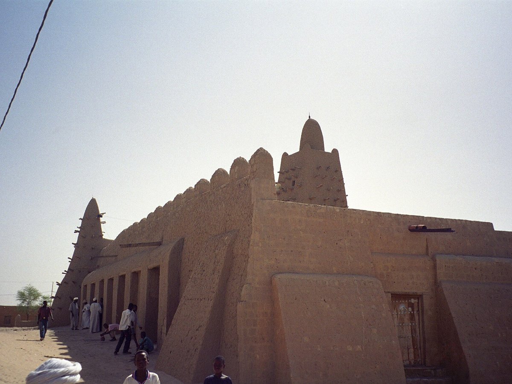

Kulturerbe · Mali
Timbuktu
Die alte Karawanenstadt am Südrand der Sahara war im 15. und 16. Jahrhundert eine intellektuelle Metropole Afrikas — Sitz der Universität Sankoré mit 25.000 Studenten und einer Bibliothek von Tausenden Manuskripten. Drei große Lehmziegelmoscheen, sechzehn Heiligenmausoleen.
Als 2012 islamistische Milizen die Stadt besetzten, zerstörten sie mit Spitzhacken und Meißeln vierzehn der sechzehn Mausoleen. Mutige Bürger schmuggelten Hunderttausende Manuskripte in Eselskarren nach Bamako. Heute ist Timbuktu wieder unter staatlicher Kontrolle, doch die Bedrohung durch bewaffnete Gruppen bleibt — und der Sand der Wüste rückt weiter vor.